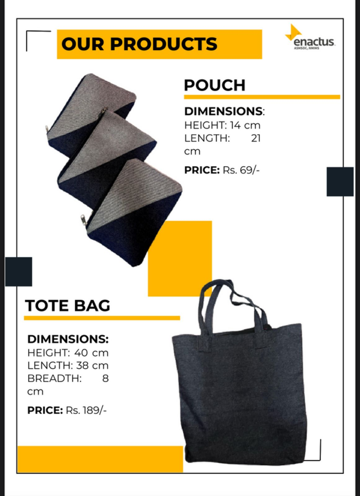
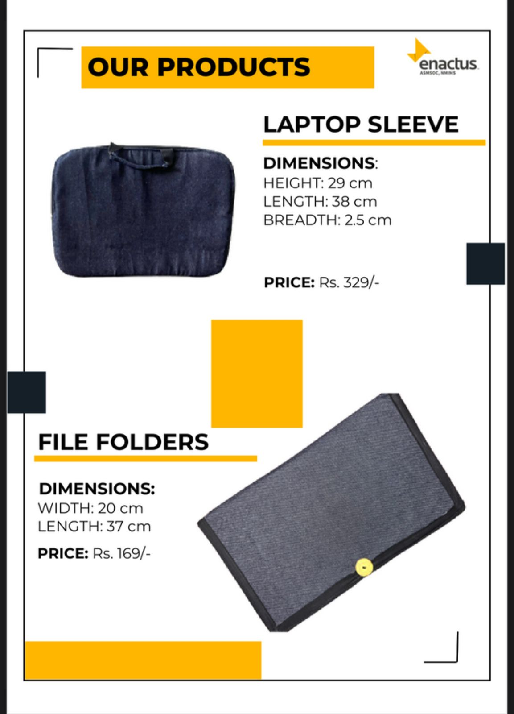
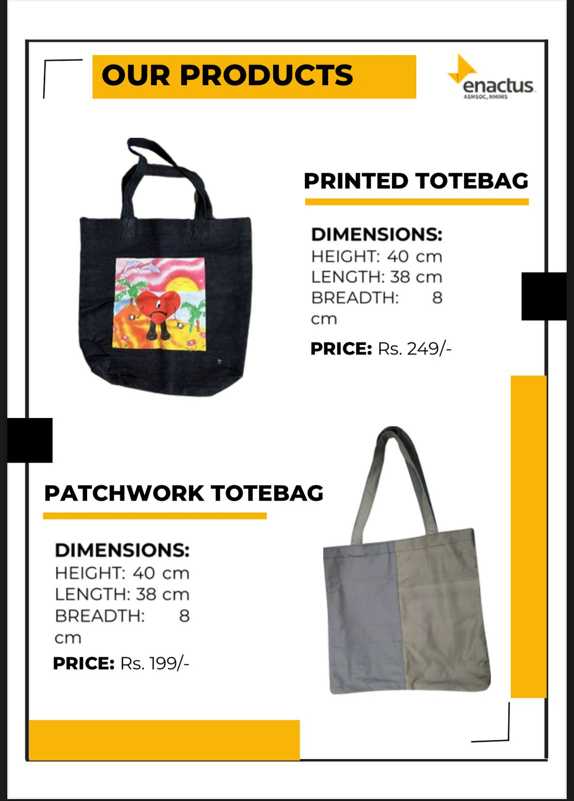
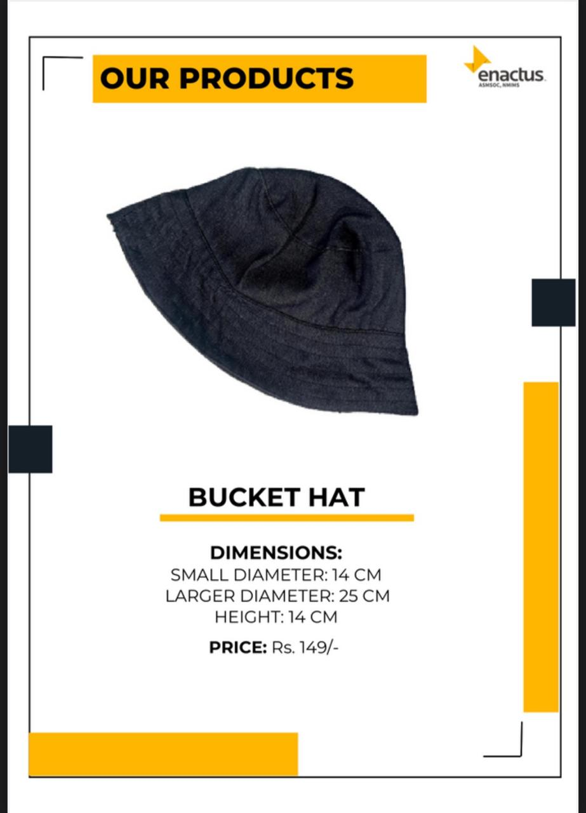

Project NEEV
   Integrity in Every Stitch
Sustainable Fashion is an all-inclusive term that refers to products, processes, activities, and stakeholders (policymakers, brands, consumers) aiming to achieve a carbon-neutral fashion sector based on equality, social justice, animal welfare, and ecological integrity. But it doesn’t stop here, it also consists of the entire product lifecycle, from the production of the garment to sales, and finally, disposed of in landfills.
As easy as it sounds, it is not because when a brand chooses to go sustainable, it incurs more overheads, which reduces its profit margin, and above all, consumers should be willing to pay more to help make the change or the least they can do is to stop purchasing from brands who have no regard for the environment.
Sustainable fashion is an umbrella under which comes ‘Ethical and Fair-Trade Fashion’, ‘Circular Fashion’, ‘Vegan and Cruelty-Free Fashion’, and ‘Conscious Fashion’. They are explained below:
1. Ethical and Fair-Trade Fashion: This ensures fair wages and safe working conditions.
2. Circular Fashion: It repurposes waste materials like recycled polyester.
3. Vegan and Cruelty-Free Fashion: It avoids animal-derived materials and testing.
4. Conscious Fashion: This is about educating the consumers to support eco-friendly choices.
The sooner we realize the importance and need of sustainability, the better it is for us. The fashion industry is one of the world’s largest polluters, responsible for 20% of global industrial water pollution. Most of the clothes are made of plastic, creating a microplastic disaster. In addition, thousands of hazardous chemicals are added to textiles threatening the environment and the labour working in the factory. Sustainable brands aim to reduce waste generation by manufacturing premium apparel from long-lasting materials. Project NEEV by ENANCTUS ASMSOC is an example of Sustainable Fashion as it uses recycled denim fabric to make tote bags and pouches.
To conclude, if we want to save our planet, we need to take a step NOW against huge fashion joints that exploit resources, human labour, and most importantly, the environment due to their unethical ways of production.Lastly, ‘Greenwashing’, is a phenomenon where brands falsely advertise their products to be environmentally friendly through deceptive certifications which increases consumer and retailer trust. It is upon us as consumers whether we want to verify certificate issuers and material origins to avoid being misled. A TRUE FASHIONISTA WILL MAKE THAT CONSCIOUS EFFORT TO BE SUSTAINABLE UNLIKE THOSE WHO FALSELY CLAIM, WHICH FASHIONISTA DO YOU WANT TO BE?